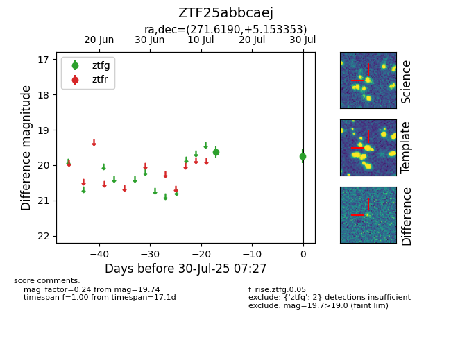

Target ZTF25abbcaej at 2025-07-30 07:27, see:
FINK: fink-portal.org/ZTF25abbcaej
Lasair: lasair-ztf.lsst.ac.uk/objects/ZTF25abbcaej
ALeRCE: alerce.online/object/ZTF25abbcaej
alt names
ZTF25abbcaej (ztf,fink)
coordinates:
equatorial (ra, dec) = (271.6190,+5.15335)
galactic (l, b) = (32.4284,+12.34160)
photometry
last ztfg=19.74
2 ztfg detections
